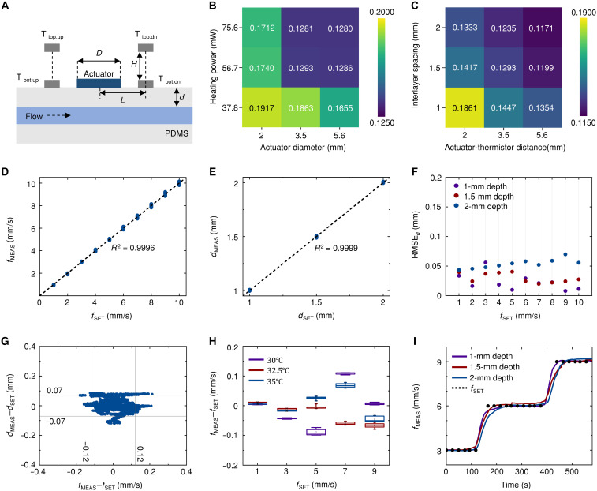
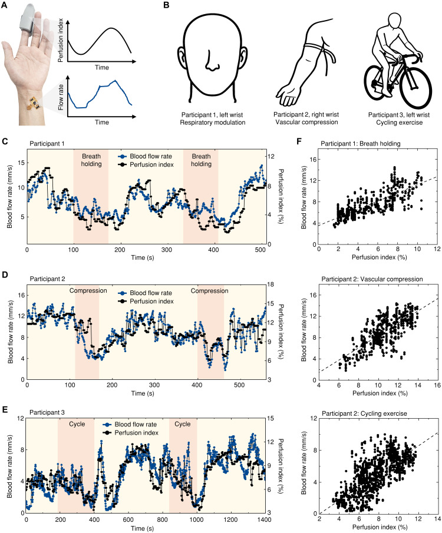

论文资料
Deep learning–integrated multilayer thermal gradient sensing platform for real-time blood flow monitoring
已取得公开摘要，图文解读尚未完成
已取得公开摘要，图文解读尚未完成。取得完整资料并通过核验后，这个地址会更新为图文解读。
公开摘要
Blood flow monitoring is fundamental for assessing cardiovascular health and identifying vascular complications. Traditional Doppler ultrasound methods require bulky equipment and specialized expertise, while recent thermal sensing approaches face limitations due to blood vessel depth variability beneath the skin. We present a soft electronic platform that integrates multilayer thermal sensing with deep learning algorithms to simultaneously measure blood flow rate and vessel depth. The device uses a wireless system with thermal sensing modules, featuring strategically positioned thermistors in separate layers to capture thermal gradients at different heights from the skin surface. Deep learning processes multilayer thermal patterns to extract both parameters in real time. Validation through benchtop testing, finite element analysis, and on-body trials demonstrates accurate measurements across relevant flow rates and vessel depths. Integration with photoplethysmography enhances continuous blood pressure monitoring accuracy compared to conventional approaches, particularly during dynamic physiological changes. This technology offers potential for personalized cardiovascular monitoring, early detection of hemodynamic events, and skin graft surveillance.
原图未改动。以下图注来自标注的来源，不据此补写摘要未报告的实验结论。
已取得的论文原图

原文图注与出处
Multilayer thermal sensing architecture for simultaneous blood flow and vessel depth monitoring. ( A and B ) IR thermal imaging of a 3.5-mm diameter thermal actuator positioned over blood vessel phantoms at depths of 1 mm (A) and 2 mm (B) from the skin surface, demonstrating depth-dependent absorption and dissipation patterns. Flow velocity maintains 1 mm/s with thermal power density of 5.89 mW/mm -2 . ( C ) Photograph of the multilayer thermal sensor over a wrist vein. Inset provides a side view. ( D ) Cross-sectional schematic illustrating the spatial arrangement of upstream (T top,up and T bot,up ) and downstream (T top,dn and T bot,dn ) thermistors in both top/bottom sensing layers relative to the central thermal actuator and blood vessel orientation. ( E ) Exploded-view illustration of the sensor architecture showing the layered assembly: top and bottom thermistor arrays, acrylic support structures maintaining 1.5-mm interlayer spacing, thermal actuator, and adhesives. ( F and G ) FEA results showing planar temperature distributions in top and bottom sensing layers for vessel depths of 1 mm (F) and 2 mm (G) with 1-mm/s flow rate. Temperature ranges from 25° to 37°C.
Sim Youngmin et al.
原文图页 · CC BY 4.0
原文图注与出处
Wireless blood flow sensing platform with deep learning integration. ( A ) Photograph of the flexible blood flow sensing module with BLE communication capabilities. The width, length, and thickness of the device are 27.8, 27.2, and 1.5 mm, respectively, excluding battery. Inset shows side view illustrating the 1.5-mm separation between sensing layers through acrylic support. ( B ) Schematic exploded view of the multilayer flow sensor showing the fPCB designed for folding configuration. ( C ) IR thermal image showing temperature gradients (30° to 38°C) and asymmetric heat propagation along blood flow direction. ( D ) Circuit and block diagram of the platform architecture comprising the TSM integrated with BLE SoC. The TSM consists of two-layered upstream (TH up ), downstream (TH dn ), and reference (TH ref ) thermistors with Wheatstone bridge configurations, differential amplifiers (AMPs), variable gain amplifiers, and analog-to-digital converters (ADCs). VDD, supply voltage; GND, ground. ( E ) Deep learning neural network architecture accepting six input features (upstream, downstream, reference thermistor inputs from each sensing layer) to generate two outputs: flow rate and vessel depth. The network uses linear layers with ReLU activation, batch normalization (BatchNorm), and 10% dropout regularization.
Sim Youngmin et al.
原文图页 · CC BY 4.0

原文图注与出处
System performance characterization and design optimization. ( A ) Schematic illustration of the thermal actuator geometry with multilayer thermistor configuration, defining design parameters: actuator diameter ( D ), heating power ( P ), actuator-thermistor distance ( L ), and interlayer spacing ( H ). ( B and C ) RMSE heatmaps for flow rate measurements across various design parameter combinations. (B) RMSE values for actuator diameter (2, 3.5, and 5.6 mm) and heating power (37.8, 56.7, and 75.6 mW) with L = 3.5 mm and H = 1.5 mm. (C) RMSE analysis for actuator-thermistor distance (2, 3.5, and 5.6 mm) and interlayer spacing (1, 1.5, and 2 mm) with D = 3.5 mm and P = 56.7 mW. ( D and E ) Linear correlation analysis using optimized parameters ( D = 3.5 mm, P = 56.7 mW, L = 3.5 mm, H = 1.5 mm) on an expanded dataset of 9000 measurement points, demonstrating prediction accuracy for both flow rate [(D), R 2 = 0.9996] and vessel depth [(E), R 2 = 0.9999]. ( F ) Vessel depth RMSE across different flow rates, maintaining values below 0.07 mm for a 1- to 10-mm/s range. ( G ) Error distribution scatterplot showing measurement deviation with 95% of flow rate and vessel depth data points falling within ±0.12 mm/s and ±0.07 mm, respectively. ( H ) Flow rate measurement errors across ambient temperatures of 30°, 32.5°, and 35°C. ( I ) Flow rate measurements (solid lines) during step changes in flow velocity (3, 6, and 9 mm/s) across vessel depths of 1, 1.5, and 2 mm. Dotted line indicates set flow rates.
Sim Youngmin et al.
原文图页 · CC BY 4.0

原文图注与出处
Human subject validation through controlled physiological interventions. ( A ) Optical image of the blood flow sensing device positioned on a subject’s wrist over a visible vein with a reference PI device attached to the index finger. ( B ) Experimental setup for three physiological interventions: respiratory modulation (participant 1), external vascular compression (participant 2), and cycling exercise (participant 3). ( C to E ) Time-course measurements of blood flow rate (blue lines) and PI (black lines) during breath-holding (C), vascular compression (D), and cycling exercise (E). ( F ) Correlation scatterplots between PI values and blood flow measurements of all three physiological scenarios: respiratory modulation (top), external vascular compression (middle), and cycling exercise (bottom).
Sim Youngmin et al.
原文图页 · CC BY 4.0已取得的论文原图

原文图注与出处
Continuous blood pressure monitoring through thermal sensing and PPG integration. ( A ) Experimental setup illustration showing the TSM positioned over a wrist vein, PPG sensor on the middle finger, and clinical-grade blood pressure monitor (Finapres NOVA) on the index finger for reference measurements. ( B ) Neural network architecture for blood pressure prediction featuring parallel pathways that independently process TSM and PPG data through LSTM and CNN components, respectively. After concatenation, fully connected (FC) layers generate real-time blood pressure estimates (SP TSM and DP TSM ). ( C ) Simultaneous measurements of blood flow rate (black line) and PPG sensor (red line) over 600 s. The participant performed a Valsalva maneuver for 140 s (highlighted regions) to induce rapid blood pressure changes. ( D and E ) Blood pressure predictions comparing reference values (black lines; SP REF and DP REF ) with PPG-only predictions (red; SP PPG and DP PPG ) and integrated TSM-PPG predictions (blue; SP TSM and DP TSM ) for systolic (D) and diastolic (E) pressures. ( F and G ) Bland-Altman plot for systolic (F) and diastolic (G) measurement (SP MEAS and DP MEAS ) agreement during Valsalva maneuver and transition phases (10 s before, 140 s during, and 30 s after). Data from the participant in (D) and (E) (one subject, 180 samples).
Sim Youngmin et al.
原文图页 · CC BY 4.0